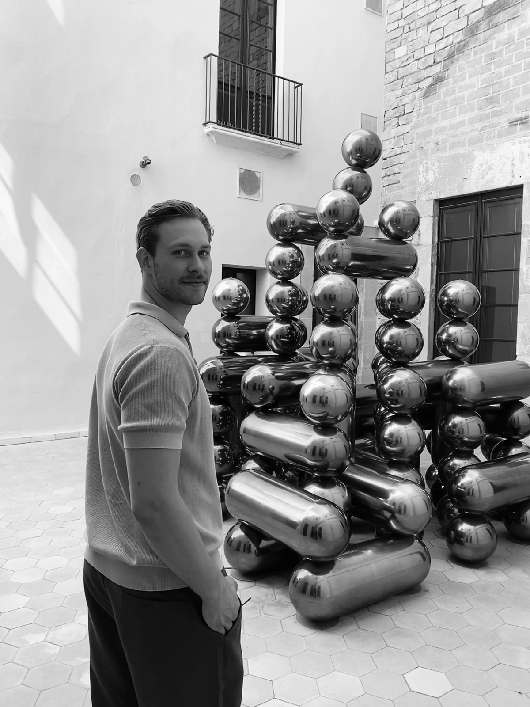

Pascal Ristl
Trained cabinetmaker, studying interior architecture at TH Rosenheim.

Profile
I’m Pascal, a trained cabinetmaker in the middle of an interior architecture degree. My apprenticeship taught me to work methodically, from the first site measurement to the finished piece: understanding the material, designing the joints, thinking every step through in the right order. That closeness to material and craft still shapes how I approach any design task.
Over time I realised that building and executing wasn’t enough for me. I want to design.
Since the winter semester 2025 I have been studying interior architecture at TH Rosenheim. The degree takes me beyond wood: other materials, the basics of building construction and the tools of design, from CAD and 3D modelling to colour, typography, composition and presentation.
The two perspectives feed each other. Knowing how something is built changes how you design it: more precise, truer to the material, closer to execution. In return, what I learn at university lets me develop, test and communicate ideas before the first board is cut. This portfolio documents that path, from detail to space.
Background
- since 2025
- B.A. Interior Architecture, TH Rosenheim
- 2024–2025
- Cabinetmaker, SFI Baldinger / Domani. Furniture and interior fit-out, fabrication and installation
- 2021–2024
- Cabinetmaker apprenticeship (journeyman’s certificate), SFI Baldinger / Domani
- 2023–2024
- Advanced training, CAD & CNC specialist
- 2022–2024
- Management assistant in crafts (master craftsman exam, part 3), HWK Freiburg
- 2014–2024
- Competitive volleyball, most recently 1. Bundesliga